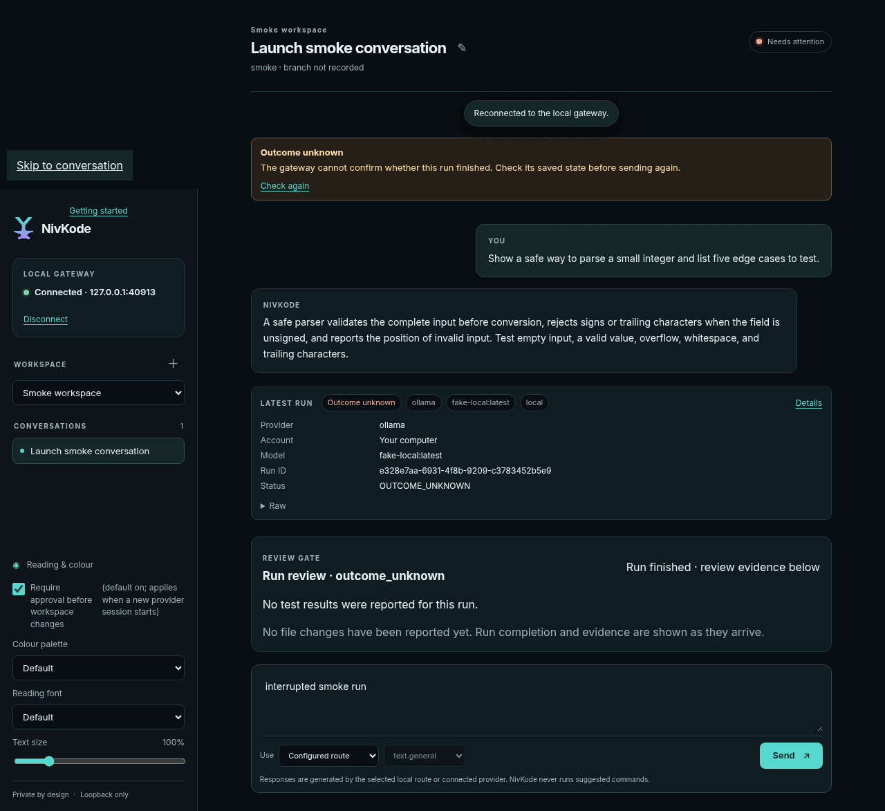
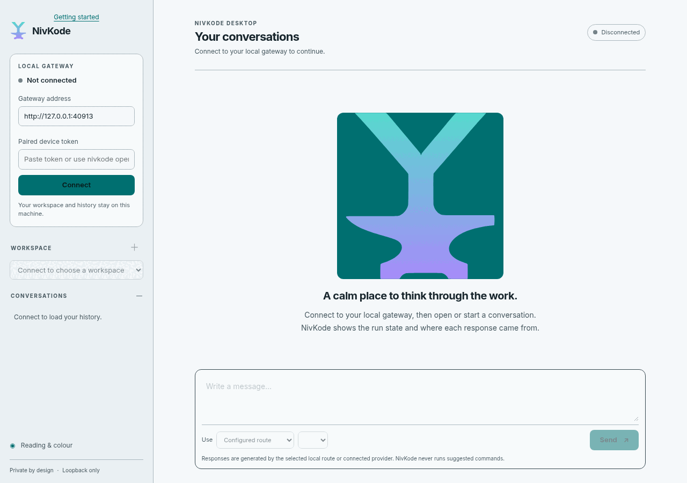
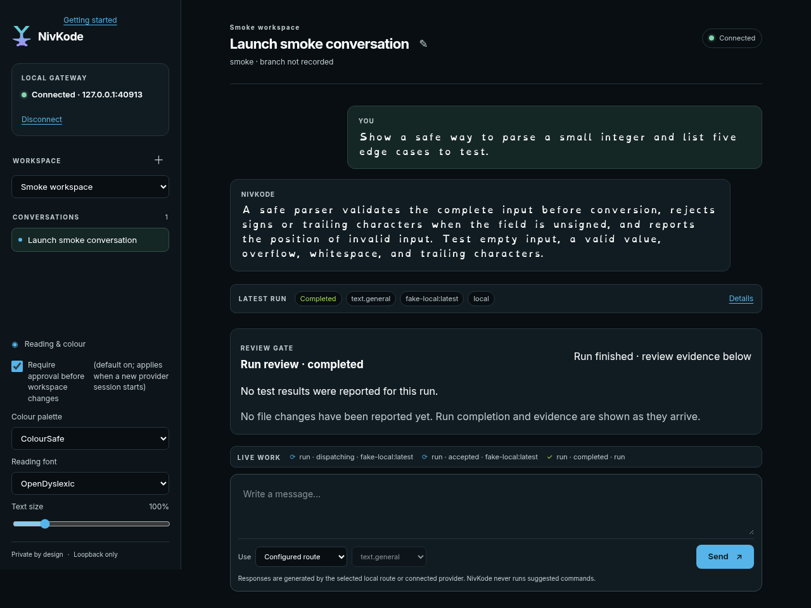
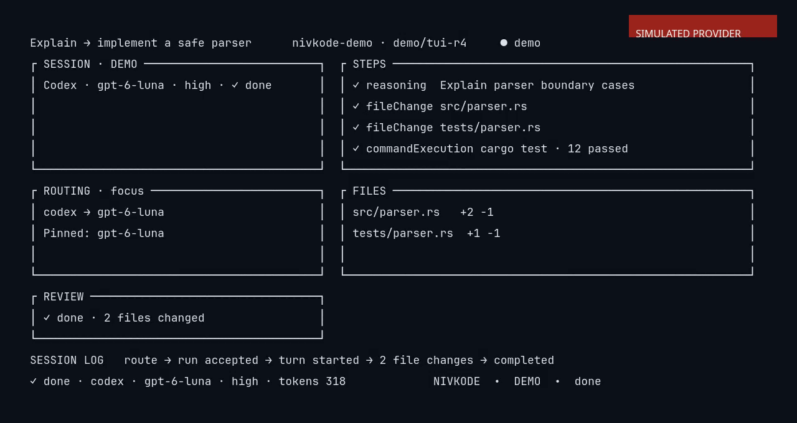

Desktop app
A desktop app remains a development goal.
For developers who want to choose, for each conversation, between a local model and an external AI provider they sign in to.
Launch target: ; may move if testing finds issues.
Desktop, command-line and terminal interfaces remain development goals. In the desktop app, new conversations start on a local model when one is installed. Defaults in other clients vary. When a conversation uses Codex, NivKode sends that conversation to the provider of your signed-in Codex account (for example OpenAI or Amazon Bedrock), under your own account.

What it is
AGPL-3.0-only
A desktop app remains a development goal.
Command-line and terminal interfaces remain development goals.
In the desktop app, new conversations start on a local model when one is installed. Defaults in other clients vary. Claude has not yet been tested in NivKode; the adapter is contract-only.
Screenshots
These scripted demonstrations use a simulated local provider. They show interface designs, not feature completeness, accessibility, or live-provider results.



Known limitations
Follow progress
We post progress as it is evidenced. Follow progress in Updates.
If you would like to help fund development, support us on Ko-fi. We welcome support for development.